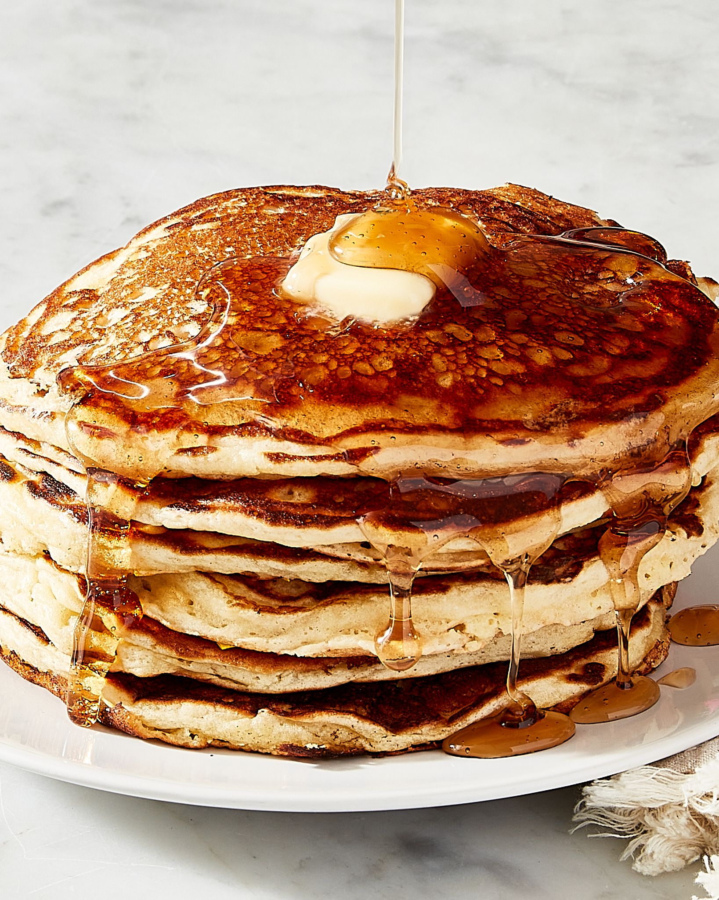

Pancake Recipe

Ingredients
- 1cup - wheat flour
- .6cup - flour
- .3cup - wheat germ
- 1.5tsp - baking powder
- .5tsp- baking soda
- 2tbsp - brown sugar
- 1tsp - salt
- 5.3tbsp - unsalted butter
- 2.5cup - buttermilk
- 2 - beated eggs
- 3tbsp - unsalted butter
Steps
- In large bowl, mix wheat flour, flour, wheat germ,
baking powder, baking soda, brown sugar, salt.
- Cut butter into small pieces, add to flour mixture.
Mix until sand-like consistancy is achieved.
- Make well in center of mixture, add buttermilk and eggs.
Stir until fully incorporated.
- Heat frying pan on med heat, grease surface.
Ladle batter into pan to form 4in pancakes.
Flip when bubbles form on surface, cook other side 2 min.